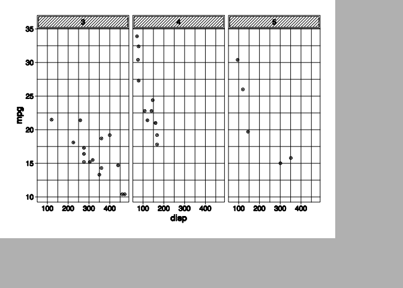
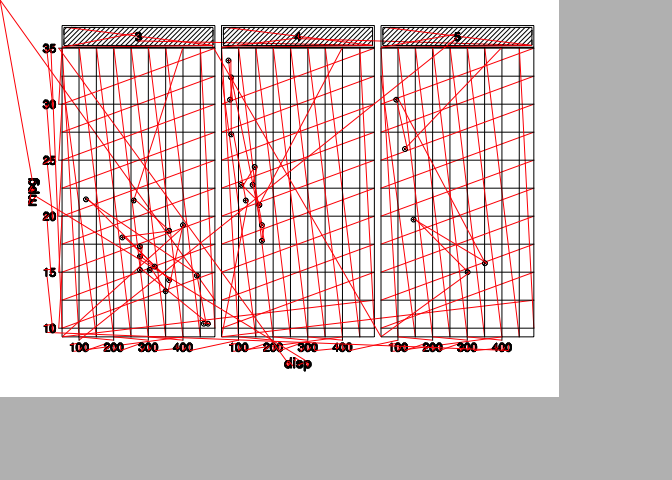

This package provides an R API to control the AxiDraw pen plotter. Under the hood it interfaces with the AxiDraw Python API and provides more or less the same possibilities. More interesting, though, is that it also provides integration with the standard R plotting system through a graphic device (axi_dev()) that translates plotting instructions from e.g. base and grid graphics to plotter movement.
Installation
fawkes is pretty niche by its very nature and it is unlikely that it will be submitted to CRAN. This should not be conflated with it not being ready for use. The current version can be installed directly from github using devtools:
# install.packages('devtools') devtools::install_github('thomasp85/fawkes')
Examples
It is difficult to showcase the use of a piece of software meant to communicate with a pen plotter virtually. axi_svg() provides access to the svg plotting capabilities build into the python API, and axi_manual() wraps the interactive mode. More interesting from R is the axi_dev() that opens up a graphic device that sends instructions to the plotter. The device comes with a lot of batteries included and will e.g. ensure stroking of the requested width by drawing multiple offsetted lines, draw fill with hatching, ask for pen change when the colour changes, and optimise the travel path to improve plotting speed. All of this is impossible to show directly, but fawkes also provides ghost_dev() that uses the exact same routines as axi_dev() but collects the instructions and lets you preview them.
library(fawkes) library(ggplot2) p <- ggplot(mtcars) + geom_point(aes(disp, mpg)) + facet_wrap(~ gear) + theme_bw(base_size = 6) + theme( plot.background = element_blank(), panel.background = element_blank() ) gd <- ghost_dev('A6', portrait = FALSE, margins = 5, ignore_color = TRUE) p invisible(dev.off()) gd$preview()

It is also possible to see the movement when the pen is raised
gd$preview(plot_air = TRUE)

This makes it easy to quickly assess the efficacy of the automatic path optimisation:
gd <- ghost_dev('A6', portrait = FALSE, margins = 5, ignore_color = TRUE, optimize_order = 'none') p invisible(dev.off()) gd$preview(plot_air = TRUE)

Limitations
As can be seen from the plots above, there is currently no text support in fawkes. This shortcoming is likely to change as I improve the text and font support in R in general. Further, there is no way to plot raster images, a limitation that is pretty much guarantied with a pen plotter.
Code of Conduct
Please note that the ‘fawkes’ project is released with a Contributor Code of Conduct. By contributing to this project, you agree to abide by its terms.